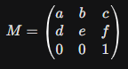
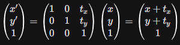

Ponto como vetor. Todo ponto do plano (x, y) pode ser tratado como um vetor-coluna. É essa representação que permite manipulá-lo com as operações da álgebra linear:
Transformação linear. Uma transformação T: ℝ² → ℝ² é linear quando pode ser escrita como o produto de uma matriz A por um vetor v, ou seja, T(v) = A·v. Ela é chamada de linear porque preserva somas e múltiplos escalares: T(u + v) = T(u) + T(v) e T(k·v) = k·T(v). É exatamente essa propriedade que garante que retas continuem retas e que a origem nunca se mova, depois de qualquer rotação, escala ou reflexão.
Multiplicação matriz×vetor. É a operação central de todo o projeto: cada linha da matriz é combinada (produto interno) com o vetor de entrada para gerar uma coordenada de saída.
Composição de transformações. Aplicar uma transformação B e, em seguida, uma transformação A a um ponto equivale a multiplicar as duas matrizes e aplicar o resultado de uma vez: (A·B)v = A(Bv). Por isso o projeto consegue acumular várias transformações numa única matriz. Um detalhe importante: multiplicação de matrizes não é comutativa — girar e depois escalar não é, em geral, o mesmo que escalar e depois girar (A·B ≠ B·A).
Determinante. Para uma matriz 2×2, det(A) = ad − bc. Ele tem dois significados geométricos usados o tempo todo nas transformações do projeto:
|det(A)| é o fator pelo qual a transformação multiplica áreas — dobrar a escala (fator 2 em x e y) dá det = 4, ou seja, a área quadruplica.
O sinal de det(A) indica se a orientação da figura foi preservada (positivo) ou invertida — como acontece nas reflexões, cujo determinante é sempre negativo.
Rotação como matriz ortogonal. A matriz de rotação satisfaz cos²θ + sen²θ = 1, o que faz det = 1 e garante que a rotação nunca altera o tamanho nem os ângulos da figura — ela só gira.
A SFML abstrai a complexidade do hardware gráfico (via OpenGL) e organiza a aplicação em cinco módulos principais: System, Window, Graphics, Audio e Network.
Game Loop: a aplicação executa em um laço contínuo estruturado em três etapas:
window.clear()), desenho dos objetos (window.draw()) e troca de buffers de renderização (window.display()).A SFML utiliza internamente a estrutura sf::Transform, que representa uma matriz de transformação afim 3×3 para manipular objetos no espaço 2D.
Essa matriz permite realizar operações como translação, rotação e escala sobre os objetos. Para aplicar rotação, escala e translação utilizando multiplicações de matrizes, a SFML utiliza coordenadas homogêneas. Um ponto 2D (x, y) é estendido para um vetor 3D (x, y, 1) transposto.
A matriz geral de transformação afim na SFML é estruturada da seguinte forma:

Onde:
No desenvolvimento gráfico com C++ e SFML, qualquer alteração visual na posição, tamanho ou orientação de um objeto na tela é realizada por meio de transformações geométricas afins. Na álgebra linear, essas transformações usam matrizes para mapear as coordenadas originais de um vetor de vértices para novas posições no espaço bidimensional. Para que todas essas operações possam ser combinadas através de simples multiplicações de matrizes, a SFML utiliza o conceito de coordenadas homogêneas, onde um ponto no plano 2D representado por (x, y) passa a ser tratado como um vetor tridimensional (x, y, 1).

A translação é uma transformação que desloca todos os pontos de um objeto por uma quantidade fixa em cada direção. Na SFML, isso é realizado através da matriz de transformação afim, onde os elementos (c, f) representam os deslocamentos em relação aos eixos x e y.
A escala é a transformação que altera o tamanho de um objeto, podendo ampliá-lo, reduzi-lo ou até espelhá-lo em relação aos eixos.
O determinante dessa matriz é Sx·Sy: é exatamente o fator pelo qual a área da figura aumenta ou diminui. Quando Sx ou Sy é negativo, o determinante fica negativo — a escala passa a incluir uma reflexão.
A rotação é a transformação que gira um objeto em torno de um ponto fixo, conhecido como centro de rotação.
Como cos²θ + sen²θ = 1, o determinante dessa matriz é sempre 1: a rotação nunca aumenta, diminui ou espelha a figura — apenas gira em torno do centro.
Documentação do projeto
O projeto (pasta projeto_configurado/) segue uma separação simples entre álgebra, geometria e controle:
Ponto/Matriz (2D) e Ponto3D/Matriz3 (3D) sabem apenas multiplicar vetores por matrizes.Figura e suas subclasses (Quadrado, Retangulo, Triangulo, Circulo, GradeQuadrados, Cubo) guardam os vértices de cada forma.Transformacao e Transformacao3D constroem, prontas, as matrizes de escala, rotação e reflexão.App liga tudo: lê cliques e teclas, chama a fábrica de matrizes certa e manda a figura ativa se redesenhar.Ponto guarda apenas x e y. Matriz guarda quatro números — a, b, c, d — e sabe fazer duas coisas: aplicar-se a um Ponto e compor-se com outra Matriz.
x' = a·x + b·y e y' = c·x + d·y — a multiplicação matriz×vetor de uma matriz 2×2.a=1, b=0, c=0, d=1, a transformação que não altera nada.Figura é a classe-base de Quadrado, Retangulo e Triangulo; todas guardam sua forma como uma lista de Ponto. Ela oferece duas formas de aplicar uma matriz:
Circulo não guarda pontos: como um círculo é sempre igual em qualquer direção, ele só precisa de centro e raio, e sua "escala" soma um valor ao raio em vez de multiplicar uma matriz. GradeQuadrados guarda vários Quadrado e aplica a mesma matriz centrada a cada um, formando o efeito de grade que se transforma em conjunto.
A classe Transformacao não guarda estado — ela só devolve a matriz 2×2 correspondente a cada operação, com o ângulo já convertido de graus para radianos quando necessário:
| Método | Matriz gerada (a, b, c, d) |
|---|---|
escala(fator) | (fator, 0, 0, fator) |
reflexaoX() | (1, 0, 0, −1) |
reflexaoY() | (−1, 0, 0, 1) |
reflexaoOrigem() | (−1, 0, 0, −1) |
rotacao(ángulo) | (cosθ, −senθ, senθ, cosθ) |
O App chama um desses métodos conforme o botão ou tecla pressionada, e passa a matriz resultante para figura.aplicarMatrizCentrada(matriz).
A mesma ideia se repete em três dimensões: Ponto3D guarda (x, y, z), Matriz3 é 3×3 e Cubo guarda 8 vértices e 12 arestas. Transformacao3D gera as matrizes de escala e de rotação em torno de cada eixo:
O Cubo não tem "aplicarMatrizCentrada" porque já nasce centrado na origem (seus 8 vértices vão de −h a +h em cada eixo), então rotacionar em torno da origem já rotaciona em torno do seu próprio centro.
A classe App é a única que conhece a janela SFML, os botões da interface e o teclado. Ela guarda qual figura está selecionada (TipoFigura) e, a cada ação do usuário, chama a matriz correspondente — por exemplo aplicarRotacao2D(15) monta Transformacao::rotacao(15) e aplica na figura ativa — além de manter matrizAcumulada2D/matrizAcumulada3D, que multiplicam as matrizes aplicadas em sequência para mostrar ao usuário qual é a transformação total já feita na figura.